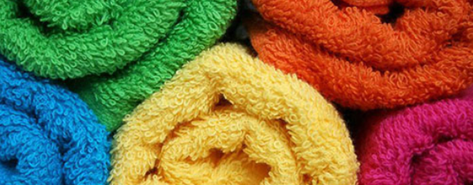

Кондиционеры. Плюсы и минусы.

Кондиционеры для стирки белья - это водные растворы катионных ПАВ с добавлением отдушек, красителей и консервантов. Основным действующим веществом являются катионные ПАВ, которые оказывают антистатическое и кондиционирующее действие. В составе кондиционеров может быть от 5 до 25% катионных ПАВ, именно концентрация последних обуславливает расход кондиционера на 1 стирку, чем больше ПАВ, тем лучше кондиционирующий эффект.